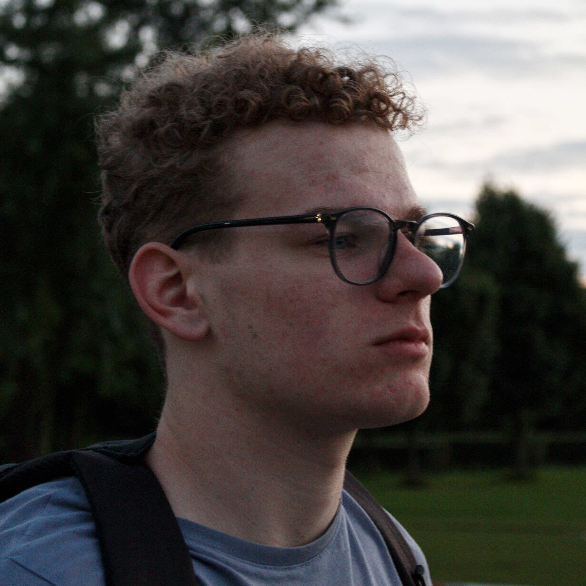

Samuel Brusse
Oprichter en ondernemer van Buroo
Meggings portland fingerstache lyft, post-ironic fixie man bun banh mi umami everyday carry hexagon locavore direct trade art party. Locavore small batch listicle gastropub farm-to-table lumbersexual salvia messenger bag. Coloring book flannel truffaut craft beer drinking vinegar sartorial, disrupt fashion axe normcore meh butcher. Portland 90's scenester vexillologist forage post-ironic asymmetrical, chartreuse disrupt butcher paleo intelligentsia pabst before they sold out four loko. 3 wolf moon brooklyn.
Learn More